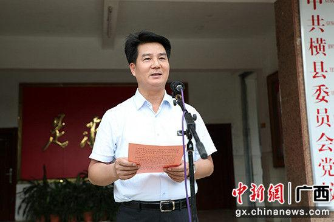
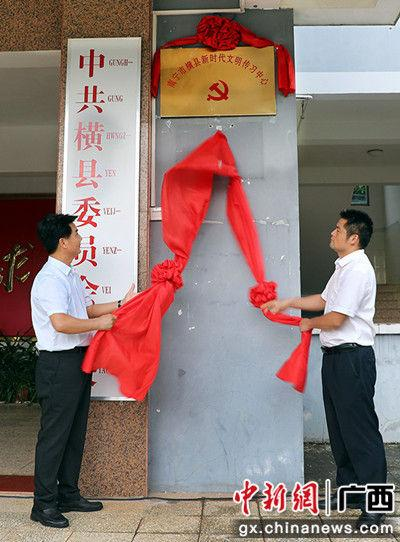

广西横县“新时代文明传习中心”揭牌
2018-07-31 来源：中国新闻网本地站
广西横县“新时代文明传习中心”揭牌

中新网广西新闻7月31日电(余道锋)广西南宁市横县近日在县委党校举行“新时代文明传习中心”揭牌仪式，这标志着横县“新时代文明传习中心”正式成立。
横县县委书记黄海韬，县长曾鹏鑫，县人大常委会主任蒋小旗、县政协主席薛文等县领导参加仪式。

黄海韬指出，成立“新时代文明传习中心”，是加强横县社会主义精神文明建设的重要平台，提升群众文化道德素质、促进社会治理现代化的重要渠道，其功能定位是在抓好自身建设，组织好各种形式文明传习活动的同时，加强对乡(镇)，村(社区)及县直单位创建的“新时代讲习所”进行指导、协调、培训和服务。
黄海韬说，“新时代文明传习中心”主要任务是突出思想建设、价值引领，以新思想入脑入心、形势政策入户到人、先进典型示范引领、弘扬文明社会风尚、志愿服务暖心“五大行动”，推进文明传习活动深入扎实开展。传习中心各成员单位要密切配合，积极参与，整合各方面资源，动员各方面力量，发挥各方面优势，推动传习工作常态化制度化，把新时代文明传习各项任务要求真正落到实处。
仪式上，黄海韬为横县“新时代文明传习中心”赠送书籍。
随后，举办横县“新时代文明传习中心”首场传习活动暨党风廉政警示教育课。全体人员一同观看了党员干部违纪违法典型案例。
黄海韬在教育课上要求，一要深入学习领会；二要坚持运用全面从严治党重要经验，重整行装再出发，推动全面从严治党不断向纵深发展；三要全面履行管党治党责任，恪守忠诚干净担当，努力营造风清气正的良好政治生态环境，以更高的标准、更严的要求、更实的作风把全面从严治党引向深入，在加快建设美丽幸福新横县征程中建功立业。